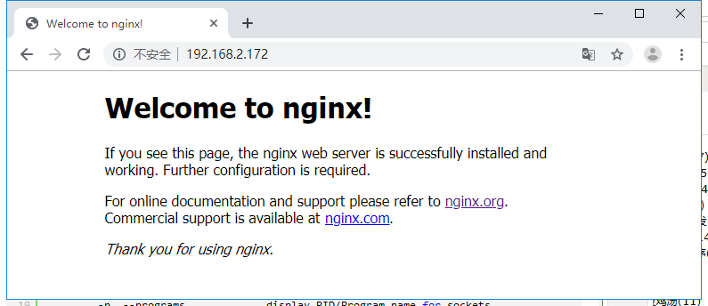
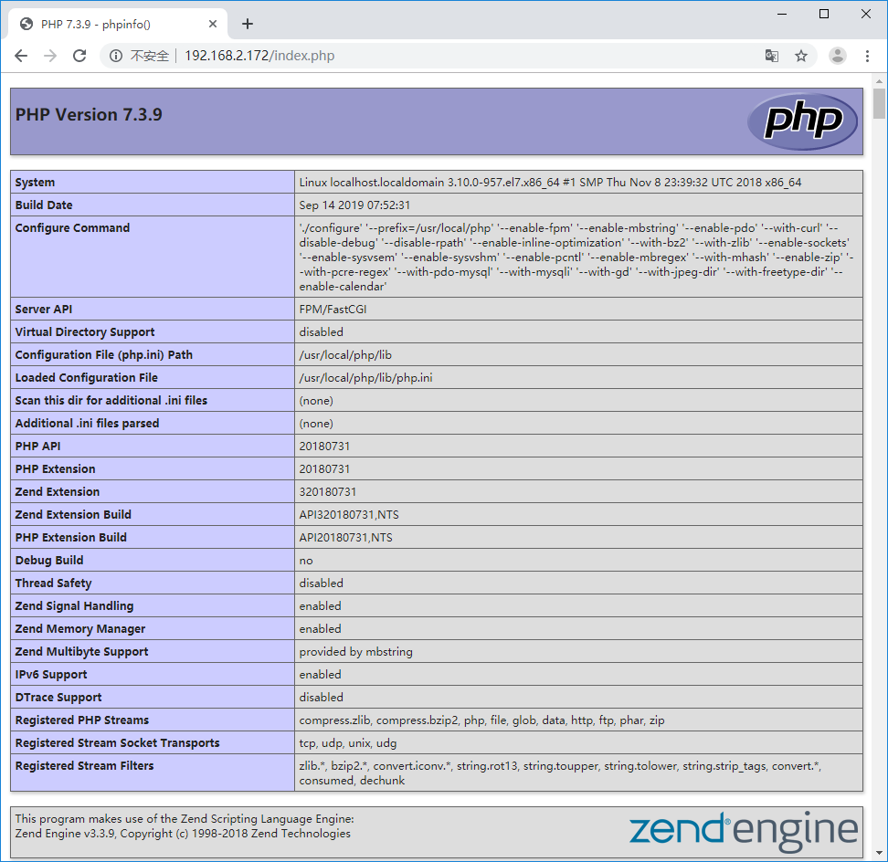

作者：王宇阳（ Mirror ）^_^
参考文章：
CentOS(最小安装)默认是不打开网络的
vi打开：/etc/sysconfig/network-scripts/ifcfg-ens33 文件
将 “ONBOOT:no”属性修改为：“ONBOOT:yes”
# sudo service network restart # ip addr安装：
# yum -y install build-essential安装：更多依赖包
# yum -y install gcc automake autoconf libtool make安装：g++
# yum -y install gcc gcc-c++选定源码目录 ==> ftp下载PCRE库 ==> 安装PCRE库
# cd /usr/local/src
# wget ftp://ftp.pcre.org/pub/pcre/pcre-8.42.tar.gz
# tar -zxvf pcre-8.42.tar.gz
# cd /pcre-8.42
# ./configure
# make && make install下载zlib源码包 ==> 安装zlib包
# cd /usr/local/src
# wget http://zlib.net/zlib-1.2.11.tar.gz
# tar -zxvf zlib-1.2.11.tar.gz
# cd zlib-1.2.11
# ./configure
# make && make install# cd /usr/local/src
# wget https://www.openssl.org/source/openssl-1.1.0k.tar.gz
# tar -zxvf openssl-1.1.0k.tar.gz
# cd ./openssl-1.1.0k
# ./configure
# make && make install# cd /usr/local/src
# wget http://nginx.org/download/nginx-1.16.1.tar.gz
# tar -zxvf nginx-1.16.1.tar.gz
# cd nginx-1.16.1
# groupadd -r nginx
# useradd -r -g nginx nginx
# ./configure \
--prefix=/usr/local/nginx \
--sbin-path=/usr/local/nginx/sbin/nginx \
--conf-path=/usr/local/nginx/nginx.conf \
--pid-path=/usr/local/nginx/nginx.pid \
--user=nginx \
--group=nginx \
--with-http_ssl_module \
--with-http_flv_module \
--with-http_mp4_module \
--with-http_stub_status_module \
--with-http_gzip_static_module \
--http-client-body-temp-path=/var/tmp/nginx/client/ \
--http-proxy-temp-path=/var/tmp/nginx/proxy/ \
--http-fastcgi-temp-path=/var/tmp/nginx/fcgi/ \
--http-uwsgi-temp-path=/var/tmp/nginx/uwsgi \
--http-scgi-temp-path=/var/tmp/nginx/scgi \
--with-pcre=/usr/local/src/pcre-8.42 \
--with-zlib=/usr/local/src/zlib-1.2.11 \
--with-openssl=/usr/local/src/openssl-1.1.0k \
[注：当前所在目录一定要是/usr/local/src/nginx-1.16.1
--with-pcre=/usr/local/src/pcre-8.41 指的是pcre-8.42 的源码路径。
--with-zlib=/usr/local/src/zlib-1.2.11 指的是zlib-1.2.11 的源码路径。
--with-openssl=/usr/local/src/openssl-1.1.0g 指的是openssl-1.1.0k 的源码路径。]
# make && make installnginx编译选项
make是用来编译的，它从Makefile中读取指令，然后编译。
make install是用来安装的，它也从Makefile中读取指令，安装到指定的位置。
configure命令是用来检测你的安装平台的目标特征的。它定义了系统的各个方面，包括nginx的被允许使用的连接处理的方法，比如它会检测你是不是有CC或GCC，并不是需要CC或GCC，它是个shell脚本，执行结束时，它会创建一个Makefile文件。nginx的configure命令支持以下参数：
--prefix=*path* 定义一个目录，存放服务器上的文件 ，也就是nginx的安装目录。默认使用 /usr/local/nginx。--sbin-path=*path* 设置nginx的可执行文件的路径，默认为 *prefix*/sbin/nginx.--conf-path=*path* 设置在nginx.conf配置文件的路径。nginx允许使用不同的配置文件启动，通过命令行中的-c选项。默认为*prefix*/conf/nginx.conf.--pid-path=*path* 设置nginx.pid文件，将存储的主进程的进程号。安装完成后，可以随时改变的文件名 ， 在nginx.conf配置文件中使用 PID指令。默认情况下，文件名 为``*prefix*/logs/nginx.pid.--error-log-path=*path* 设置主错误，警告，和诊断文件的名称。安装完成后，可以随时改变的文件名 ，在nginx.conf配置文件中 使用 的error_log指令。默认情况下，文件名 为*prefix*/logs/error.log.--http-log-path=*path* 设置主请求的HTTP服务器的日志文件的名称。安装完成后，可以随时改变的文件名 ，在nginx.conf配置文件中 使用 的access_log指令。默认情况下，文件名 为*prefix*/logs/access.log.--user=*name* 设置nginx工作进程的用户。安装完成后，可以随时更改的名称在nginx.conf配置文件中 使用的 user指令。默认的用户名是nobody。--group=*name* 设置nginx工作进程的用户组。安装完成后，可以随时更改的名称在nginx.conf配置文件中 使用的 user指令。默认的为非特权用户。--with-select_module --without-select_module 启用或禁用构建一个模块来允许服务器使用select()方法。该模块将自动建立，如果平台不支持的kqueue，epoll，rtsig或/dev/poll。--with-poll_module --without-poll_module 启用或禁用构建一个模块来允许服务器使用poll()方法。该模块将自动建立，如果平台不支持的kqueue，epoll，rtsig或/dev/poll。--without-http_gzip_module — 不编译压缩的HTTP服务器的响应模块。编译并运行此模块需要zlib库。--without-http_rewrite_module 不编译重写模块。编译并运行此模块需要PCRE库支持。--without-http_proxy_module — 不编译http_proxy模块。--with-http_ssl_module — 使用https协议模块。默认情况下，该模块没有被构建。建立并运行此模块的OpenSSL库是必需的。--with-pcre=*path* — 设置PCRE库的源码路径。PCRE库的源码（版本4.4 - 8.30）需要从PCRE网站下载并解压。其余的工作是Nginx的./ configure和make来完成。正则表达式使用在location指令和 ngx_http_rewrite_module 模块中。--with-pcre-jit —编译PCRE包含“just-in-time compilation”（1.1.12中， pcre_jit指令）。--with-zlib=*path* —设置的zlib库的源码路径。要下载从 zlib（版本1.1.3 - 1.2.5）的并解压。其余的工作是Nginx的./ configure和make完成。ngx_http_gzip_module模块需要使用zlib 。--with-cc-opt=*parameters* — 设置额外的参数将被添加到CFLAGS变量。例如,当你在FreeBSD上使用PCRE库时需要使用:--with-cc-opt="-I /usr/local/include。.如需要需要增加 select()支持的文件数量:--with-cc-opt="-D FD_SETSIZE=2048".--with-ld-opt=*parameters* —设置附加的参数，将用于在链接期间。例如，当在FreeBSD下使用该系统的PCRE库,应指定:--with-ld-opt="-L /usr/local/lib".安装完成后，按照安装的参数，安装的启动目录在/usr/local/nginx
[root@localhost nginx]# ls -l
总用量 76
drwxr-xr-x. 2 root root 4096 9月 8 09:46 conf
-rw-r--r--. 1 root root 1077 9月 8 10:34 fastcgi.conf
-rw-r--r--. 1 root root 1077 9月 8 10:34 fastcgi.conf.default
-rw-r--r--. 1 root root 1007 9月 8 10:34 fastcgi_params
-rw-r--r--. 1 root root 1007 9月 8 10:34 fastcgi_params.default
drwxr-xr-x. 2 root root 40 9月 8 09:46 html
-rw-r--r--. 1 root root 2837 9月 8 10:34 koi-utf
-rw-r--r--. 1 root root 2223 9月 8 10:34 koi-win
drwxr-xr-x. 2 root root 41 9月 8 10:37 logs
-rw-r--r--. 1 root root 5231 9月 8 10:34 mime.types
-rw-r--r--. 1 root root 5231 9月 8 10:34 mime.types.default
-rw-r--r--. 1 root root 2656 9月 8 10:34 nginx.conf
-rw-r--r--. 1 root root 2656 9月 8 10:34 nginx.conf.default
-rw-r--r--. 1 root root 6 9月 8 10:37 nginx.pid
drwxr-xr-x. 2 root root 36 9月 8 10:34 sbin
-rw-r--r--. 1 root root 636 9月 8 10:34 scgi_params
-rw-r--r--. 1 root root 636 9月 8 10:34 scgi_params.default
-rw-r--r--. 1 root root 664 9月 8 10:34 uwsgi_params
-rw-r--r--. 1 root root 664 9月 8 10:34 uwsgi_params.default
-rw-r--r--. 1 root root 3610 9月 8 10:34 win-utf
[root@localhost nginx]# pwd
/usr/local/nginx
由于CentOS-7防火墙不开发端口，所以在本地测试中，可以选择关闭防火墙或者允许开发80端口
# systemctl status firewalld ==> 防火墙状态
# systemctl start firewalld ==> 开启防火墙
# systemctl stop firewalld ==> 关闭防火墙
# systemctl restart firewalld ==> 重启防火墙
# firewall-cmd --reload ==> 防火墙重载
# firewall-cmd --permanent --zone=public --add-port=80/tcp
permanent: 永久有效
zone：作用域
--add-port=80/tcp：添加-端口=端口/通信协议开放端口或关闭防火墙后就可以启动nginx服务
[root@localhost nginx]# netstat -ano | grep 80
tcp 0 0 0.0.0.0:80 0.0.0.0:* LISTEN off (0.00/0/0)
unix 3 [ ] STREAM CONNECTED 80900
unix 3 [ ] STREAM CONNECTED 80899
[root@localhost nginx]# /usr/local/nginx/sbin/nginx
nginx: [emerg] bind() to 0.0.0.0:80 failed (98: Address already in use)
nginx: [emerg] bind() to 0.0.0.0:80 failed (98: Address already in use)
nginx: [emerg] bind() to 0.0.0.0:80 failed (98: Address already in use)
nginx: [emerg] bind() to 0.0.0.0:80 failed (98: Address already in use)
nginx: [emerg] bind() to 0.0.0.0:80 failed (98: Address already in use)
nginx: [emerg] still could not bind()
通过netstat查看端口网络状态，是否有服务占用80端口；通过调用nginx的启动目录实现nginx服务启动

如图：启动成功
为了避免每次开机手动启动，可以使用命令脚本，注册服务，开机自启动等
创建nginx启动命令脚本
`vi /etc/init.d/nginx`插入以下内容, 注意修改PATH和NAME字段, 匹配自己的安装路径 (这段是从网上copy的)
`#! /bin/bash``# chkconfig: - 85 15``PATH=/usr/local/nginx``DESC=``"nginx daemon"``NAME=nginx``DAEMON=$PATH/sbin/$NAME``CONFIGFILE=$PATH/$NAME.conf``PIDFILE=$PATH/logs/$NAME.pid``SCRIPTNAME=/etc/init.d/$NAME``set` `-e``[ -x ``"$DAEMON"` `] || exit 0``do_start() {``$DAEMON -c $CONFIGFILE || echo -n ``"nginx already running"``}``do_stop() {``$DAEMON -s stop || echo -n ``"nginx not running"``}``do_reload() {``$DAEMON -s reload || echo -n ``"nginx can't reload"``}``case` `"$1"` `in``start)``echo -n ``"Starting $DESC: $NAME"``do_start``echo ``"."``;;``stop)``echo -n ``"Stopping $DESC: $NAME"``do_stop``echo ``"."``;;``reload|graceful)``echo -n ``"Reloading $DESC configuration..."``do_reload``echo ``"."``;;``restart)``echo -n ``"Restarting $DESC: $NAME"``do_stop``do_start``echo ``"."``;;``*)``echo ``"Usage: $SCRIPTNAME {start|stop|reload|restart}"` `>&2``exit 3``;;``esac``exit 0`设置执行权限
`chmod a+x /etc/init.d/nginx`注册成服务
`chkconfig --add nginx`设置开机启动
`chkconfig nginx ``on`重启, 查看nginx服务是否自动启动
`shutdown -h 0 -r``ss -apn|grep nginx`对nginx服务执行停止/启动/重新读取配置文件操作
`#启动nginx服务``systemctl start nginx.service``#停止nginx服务``systemctl stop nginx.service``#重启nginx服务``systemctl restart nginx.service``#重新读取nginx配置(这个最常用, 不用停止nginx服务就能使修改的配置生效)``systemctl reload nginx.service`[root@localhost src]# rpm -qa |grep mysql
[root@localhost src]# wget http://repo.mysql.com/mysql-community-release-el7-5.noarch.rpm
[root@localhost src]# rpm -ivh mysql-community-release-el7-5.noarch.rpm
[root@localhost src]# yum dpdate
[root@localhost src]# yum install mysql-server
[root@localhost src]# chown mysql:mysql -R /var/lib/mysql 设置权限
[root@localhost src]# mysqld --initialize 初始化mysql
[root@localhost src]# systemctl start mysqld 启动mysql
PHP-FPM是一个PHP FastCGI管理器，是只用于PHP的
# yum -y install libmcrypt-devel mhash-devel libxslt-devel \
libjpeg libjpeg-devel libpng libpng-dvevl freetype freetype-devel libxml2 libxml2-devel \
zlib zlib-devel glibc glibc-devel glib2 glib2-devel bzip2 bzip2-devel \
ncurses ncurses-devel curl curl-devel e2fsprogs e2fsprogs-devel \
krb5 krb5-devel libidn libidn-devel openssl openssl-devel
# yum -y install libzip
# wget http://103.40.19.56/lnmp/libzip-1.3.2.tar.gz
# tar -zxvf libzip-1.3.2.tar.gz cd libzip-1.3.2
# ./configure
# make && make install
# wget ftp://mcrypt.hellug.gr/pub/crypto/mcrypt/attic/libmcrypt/libmcrypt-2.5.7.tar.gz
# tar -zxvf libmcrypt-2.5.7.tar.gz
# cd libmcrypt-2.5.7
# ./configure –prefix=/usr/local
# make && make install# cd /usr/local/src
# wget http://php.net/get/php-5.6.27.tar.gz/from/a/mirror
# tar -zxvf php-5.6.27.tar.gz
# ./configure --prefix=/usr/local/php --enable-fpm --with-mcrypt \
--enable-mbstring --enable-pdo --with-curl --disable-debug --disable-rpath \
--enable-inline-optimization --with-bz2 --with-zlib --enable-sockets \
--enable-sysvsem --enable-sysvshm --enable-pcntl --enable-mbregex \
--with-mhash --enable-zip --with-pcre-regex --with-pdo-mysql --with-mysqli \
--with-gd --with-jpeg-dir --with-freetype-dir --enable-calendar\
# make && make install我在执行configure时，发生报错：Please reinstall the libzip distribution 于是我删除了旧版的libzip“yum remove libzip”，之后下载libzip源码包进行本地执行configure+make&&make install
执行libzip的安装：
# wget https://libzip.org/download/libzip-1.5.2.tar.gz
# tar -zxf libzip-1.2.0.tar.gz
# cd libzip-1.2.0
# ./configure
# make && make installPHP安装新问题：安装执行configure时报错
configure: error: off_t undefined; check your library configuration解决方法：
vim /etc/ld.so.conf
#添加如下几行
/usr/local/lib64
/usr/local/lib
/usr/lib
/usr/lib64
#保存退出
:wq
ldconfig -v # 执行命令，使之生效报错：configure: WARNING: unrecognized options: --with-mcrypt
解决方法：PHP 7.2+不支持 --with-mcrypt ; --enable-gd-native-ttf
# ./configure --prefix=/usr/local/php --enable-fpm \
--enable-mbstring --enable-pdo --with-curl --disable-debug --disable-rpath \
--enable-inline-optimization --with-bz2 --with-zlib --enable-sockets \
--enable-sysvsem --enable-sysvshm --enable-pcntl --enable-mbregex \
--with-mhash --enable-zip --with-pcre-regex --with-pdo-mysql --with-mysqli \
--with-gd --with-jpeg-dir --with-freetype-dir --enable-calendar\其它错误可以参考百度/Google解决(常见php安装的方案)！
至此！PHP-fpm安装的基本流程结束了，下一步就需要配置文件
# cp php.ini-production /usr/local/php/lib/php.ini# cd /usr/local/php
# cp etc/php.fpm.conf.default etc/php-fpm.conf
# vi etc/php-fpm.confvi打开php-fpm.conf文件：
将文件的尾部的索引；修改成实际的目录
include=/usr/local/php/etc/php-fpm.d/*.conf添加用户和组：
useradd mirror
groupadd -g mirror mirror默认情况下，etc/php-fpm.d/目录下有一个“www .conf.defalut”用户配置文件
# cp /usr/local/php/etc/php-fpm.d/www.conf.default /usr/local/php/etc/php-fpm.d/www.conf
# vi /usr/local/php/etc/php-fpm.d/www.conf修改“www.conf"文件中的user和group的value；添加用户和组
user = mirror
group = mirror# /usr/local/php/sbin/php-fpm
# ps aux | grep php-fpm [验证服务启动]
# netstat -tln | grep 9000 [验证网络端口是否使用][root@localhost /]# ps aux | grep php-fpm
root 41831 0.0 0.3 221264 6220 ? Ss 08:54 0:00 php-fpm: master process (/usr/local/php/etc/php-fpm.conf)
mirror 41832 0.0 0.2 221264 5748 ? S 08:54 0:00 php-fpm: pool www
mirror 41833 0.0 0.2 221264 5748 ? S 08:54 0:00 php-fpm: pool www
root 41835 0.0 0.0 110292 916 pts/0 R+ 08:54 0:00 grep --color=auto php-fpm
[root@localhost /]# netstat -tln | grep 9000
tcp 0 0 127.0.0.1:9000 0.0.0.0:* LISTEN 至此！php-fpm服务启动成功！
[root@localhost nginx]# vi ./nginx.conf
#user nobody;
worker_processes 1;
#error_log logs/error.log;
#error_log logs/error.log notice;
#error_log logs/error.log info;
#pid logs/nginx.pid;
events {
worker_connections 1024;
}
http {
include mime.types;
default_type application/octet-stream;
#log_format main '$remote_addr - $remote_user [$time_local] "$request" '
# '$status $body_bytes_sent "$http_referer" '
# '"$http_user_agent" "$http_x_forwarded_for"';
#access_log logs/access.log main;
sendfile on;
#tcp_nopush on;
#keepalive_timeout 0;
keepalive_timeout 65;
#gzip on;
server {
listen 80;
server_name localhost;
#charset koi8-r;
#access_log logs/host.access.log main;
location / {
root html;
index index.html index.htm;
}
#error_page 404 /404.html;
# redirect server error pages to the static page /50x.html
#
error_page 500 502 503 504 /50x.html;
location = /50x.html {
root html;
}
# proxy the PHP scripts to Apache listening on 127.0.0.1:80
#
#location ~ \.php$ {
# proxy_pass http://127.0.0.1;
#}
# pass the PHP scripts to FastCGI server listening on 127.0.0.1:9000
#
#location ~ \.php$ {
# root html;
# fastcgi_pass 127.0.0.1:9000;
# fastcgi_index index.php;
# fastcgi_param SCRIPT_FILENAME /scripts$fastcgi_script_name;
# include fastcgi_params;
#}
# deny access to .htaccess files, if Apache's document root
# concurs with nginx's one
#
#location ~ /\.ht {
# deny all;
#}
}
# another virtual host using mix of IP-, name-, and port-based configuration
#
#server {
# listen 8000;
# listen somename:8080;
# server_name somename alias another.alias;
# location / {
# root html;
# index index.html index.htm;
# }
#}
# HTTPS server
#
#server {
# listen 443 ssl;
# server_name localhost;
# ssl_certificate cert.pem;
# ssl_certificate_key cert.key;
# ssl_session_cache shared:SSL:1m;
# ssl_session_timeout 5m;
# ssl_ciphers HIGH:!aNULL:!MD5;
# ssl_prefer_server_ciphers on;
# location / {
# root html;
# index index.html index.htm;
# }
#}
}修改server配置块中的location和php后端请求配置块
server {
listen 80;
server_name localhost;
#charset koi8-r;
#access_log logs/host.access.log main;
location / {
root html;
index index.html index.htm index.php
}
#error_page 404 /404.html;
# redirect server error pages to the static page /50x.html
#
error_page 500 502 503 504 /50x.html;
location = /50x.html {
root html;
}
# proxy the PHP scripts to Apache listening on 127.0.0.1:80
#
#location ~ \.php$ {
# proxy_pass http://127.0.0.1;
#}
# pass the PHP scripts to FastCGI server listening on 127.0.0.1:9000
#
location ~ \.php$ {
root html;
fastcgi_pass 127.0.0.1:9000;
fastcgi_index index.php;
fastcgi_param SCRIPT_FILENAME /scripts$fastcgi_script_name;
include fastcgi_params;
}
# deny access to .htaccess files, if Apache's document root
# concurs with nginx's one
#
#location ~ /\.ht {
# deny all;
#}
}
在location配置块中添加index.php首页
php请求和后端php-fpm模块进行通信，需要配置location ~ .php$配置块
root：配置php程序文件的根目录
*** 修改配置文件的第一行：”user“属性为我们之前配置的用户**，表示nginx的权限
至此！我们的Nginx和php的环境完成简单的配置！
启动Nginx服务
# /usr/local/nginx/sbin/nginx启动php-fpm服务
# /usr/local/php/sbin/php-fpm启动mysql服务
# systemctl start mysqld
在Nginx的目录html中添加一个php文件：”index.php“
<?php
phpinfo();
?>编写一个连接数据库行为的php文件：”mysql.php“
php和mysql之间的连接操作依靠的是”mysqli“
<?php
$conn = mysqli_connect("127.0.0.1","root","926498");
if(! $conn ) {
echo "连接失败".mysqli_connect_error();
} else {
echo "连接成功";
}
?>至此！PHP+Nginx+MySQL环境完成了基本的搭建!